Major Lab News
New Year, New Webiste
This is our first major revamp of our lab website. We have migrated some major news, but it has been a busy past three years and the lab has grown! Several students have gotten their own research grants and scholarships, both internal and external. Several have graduated and are now off to bigger adventures. We will try to keep this new online home for our lab updated with major news as they happen.
Mark represents Savannah at the GMRS
The Georgia Magnetic Resonance Symposium 2025 was held at the Georgia Institute of Technology. Mark gave a talk on the applications of solution NMR spectroscopy to the lab's efforts of finding inhibitors of PRL3. He also shared preliminary insights from the SynZyme CURE, developed with Dr. Shainaz Landge.
Chase's work from Bellarmine available online.
Long time coming, but it's finally out. Chase Yost's work with our lab and Dr. Savita Chaurasia from Bellarmine University entitled, Eriodictyon californicum Extract Inhibits Therapeutically Relevant Protein Tyrosine Phosphatase 1B is now published at the Research Journal of Pharmacy and Technology. This is Chase's first first author paper. Congratulations Chase!
Year 2 Olympics: Mark goes down.
Mark is not able to defend his championship as Alicia takes the Ultimate Champion Trophy in this year's version of the Lab Olympics. Grace hosted the lab party at her new home (thank you, Grace!). This year, we have two major awards: the 2025 Lab Member of the Year Award goes to Ruby Pitts, who has already graduated and is currently a research assistant at Vanderbilt, and the inaugural 2025 Rising Star Award to Hannah Scroggins, who has been an outstanding first-year member! We expect great things from both of them!
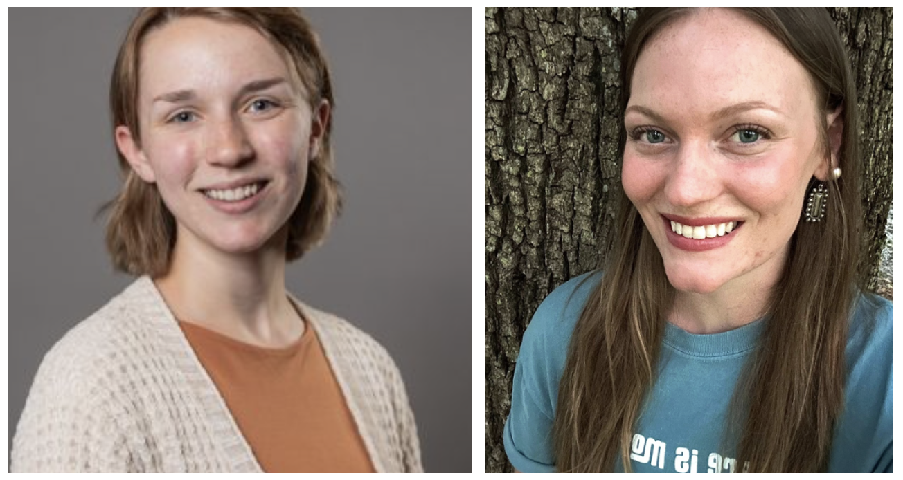
Mark gives a talk at DLSU and survives (Ateneo joke)
Mark gave an invited talk virtually at the Department of Chemistry, De La Salle University in the Philippines. Looking forward to collaborations with DLSU faculty in the future!
Another NIH Grant funded!
We're thrilled to have our NIH S15 application funded. This will allow us to purchase two high-speed centrifuges that not only supports our current work (makes our purification pipeline more efficient) but also enables additional research. This is so exciting!

COSM Excellence Awardee in the house!
Mark was recognized by a COSM Excellence in Research Award for 2025!
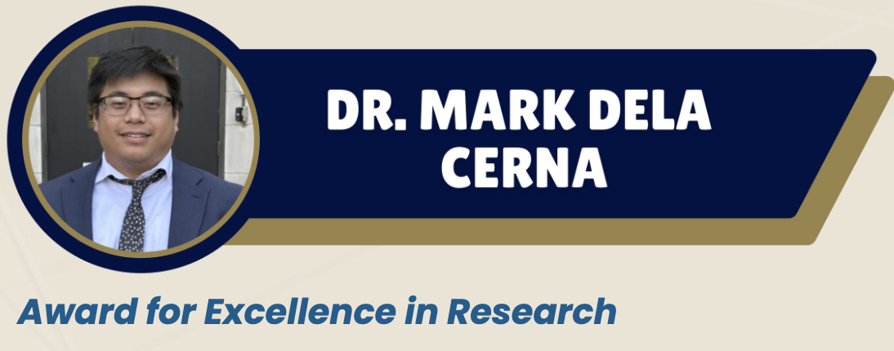
Grace bestowed with highest award for GS grad students!
This year, Grace's excellent work so far was acknowledged and recognized by an Averitt Award for Excellence in Research. The Averitt Awards are the highest honors bestowed upon graduate students at Georgia Southern's Graduate School. Congratulations!!
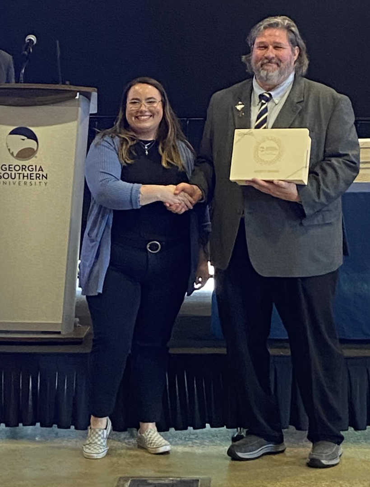
Our first press release!
Our work on PRL3 and development of cancer metastasis was featured in Grice Connect, Statesboro-Bulloch County news.
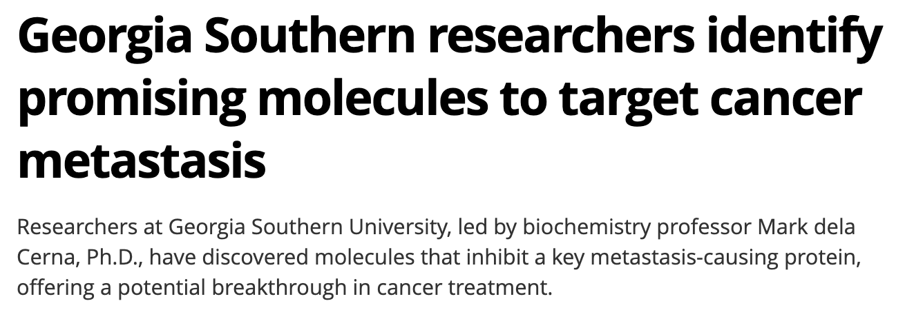
The inaugural lab olympics: Mark DOMINATES
The lab ended the year with our annual State of the Lab Address by Mark. It also featured our inaugural Lab Olympics. There were a total of nine different events. This year, Mark (winning 3 of the 9 events) was awarded the ultimate champion award. Needless to say, there is a huge target on his back for next year -- the lab is coming for you!! We thank MS student Grace for organizing the olympics! See Biochemistry Sophomore Oscar's attempt at the pipette tip basketball event. We also awarded several awards - most important among them is the Lab Member of the Year Award which goes to Oscar!
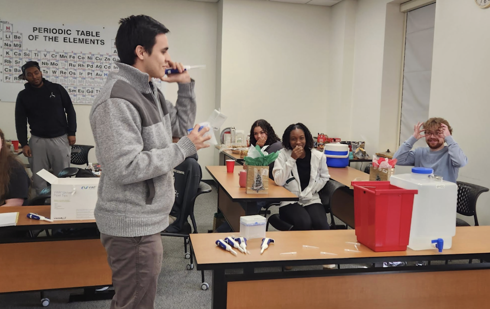
Mark goes to Korea as a Visiting Scientist
Through funding from the Korea Basic Science Institute, Mark was able to spend a week in the institute in Ochang, South Korea with collaborators Donghan Lee (KBSI) and Elias Fernandez (U. Tennessee). This visit also allowed Mark to use one of the world's first 1.2 GHz NMR!
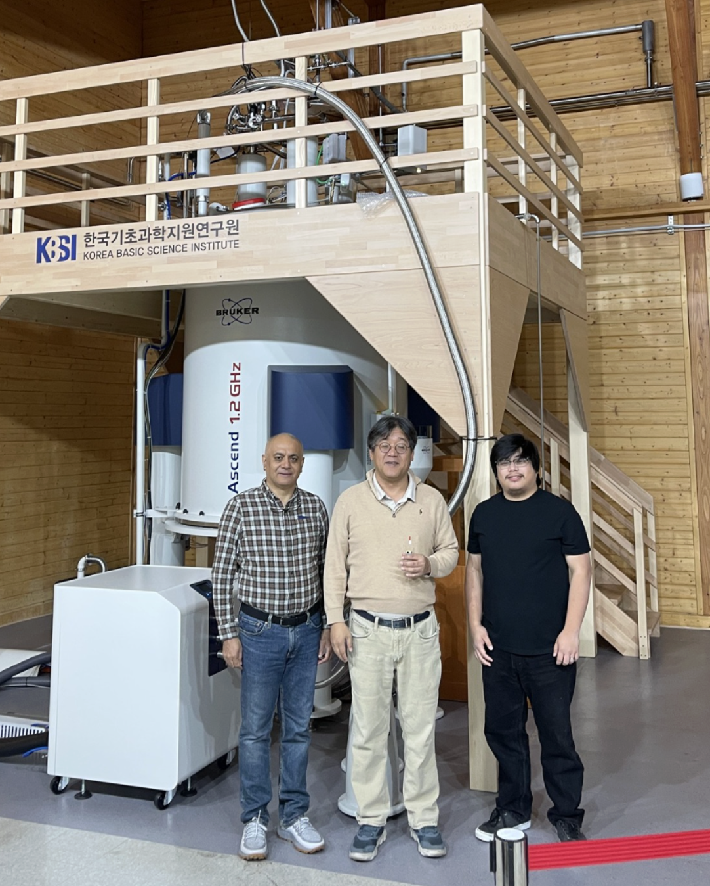
Mark awarded a Dreyfus Lectureship for Undergraduate Institution!
Thanks to the Camille and Henry Dreyfus Foundation for selecting our application for the Dreyfus Lectureship. This award will support summer research at Georgia Southern, and will also fund a lectureship which we will organize between now and 2027. Watch out for it, we might have something set up for Spring of 2026 or 2027.
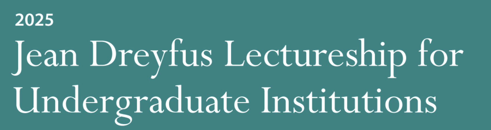
Grace in another conference - this time, ACS Colorado
MS student, Grace, presented her work on fluorinated fragment screening to identify new PRL3 inhibitors at the Fall 2024 meeting of the American Chemical Society in Denver, CO. She has now presented several aspects of her undergraduate and graduate research in FIVE different states! Whoop, whoop!
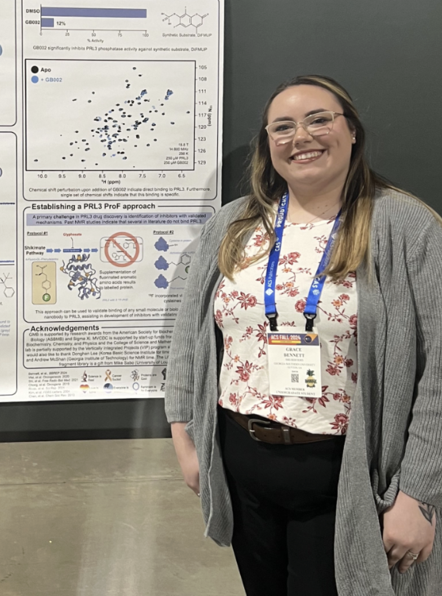
First Grant! We are an NIH-funded lab!
The National Institutes of Health / National Institute of General Medical Sciences has funded our R16 proposal to study the druggability of oncogenic and pro-metastatic phosphatase, PRL3, and develop novel migrastatics targeting this protein. LET'S GET THINGS DONE!
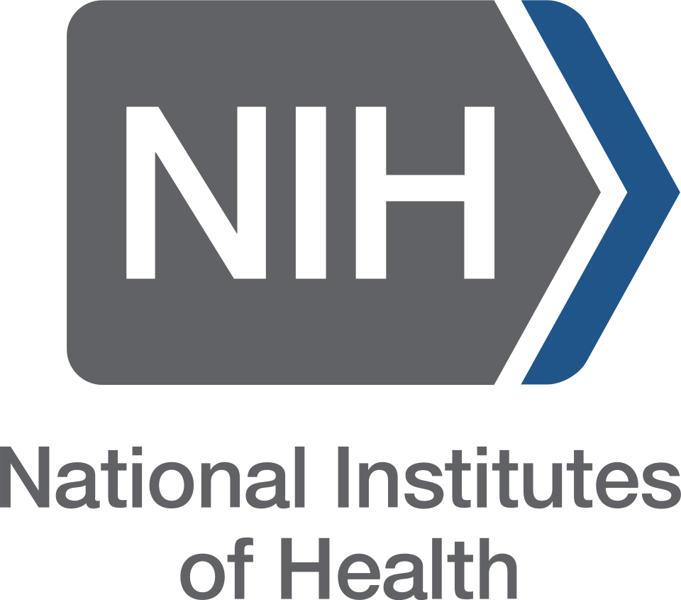
Summer send-off to Athens and Pasadena
Send off 'party' at Flacos Tacos, Richmond Hill for Davis who is off to pursue his PhD in Biochemistry at the University of Georgia. Thank you to the Rutan family for hosting! Turned out to be a send off 'party' for Victoria as well, who is leaving for college at the California Institute of Technology.
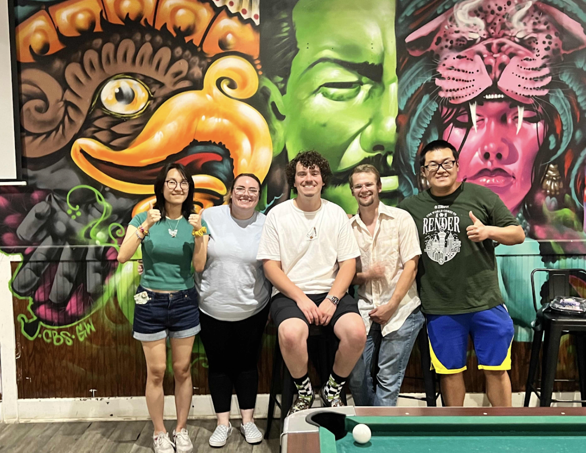
First student-led paper from the lab is available online!
Our paper, In silico identification of putative druggable pockets in PRL3, a significant oncology target, is now available online. Published at Biochemistry and Biophysics Reports, this work was done by Grace Bennett and Julia Starczewski. This is Grace's first first-author paper, and what I'm sure will be first of many.
First big-ish graduation from the lab
Congratulations to all 2024 graduates, but especially to ours. Ty Spencer (Cum Laude, BS Biochemistry, minor in Biology 2024), Davis Rutan (BS Biochemistry 2024), Anna Feil (Cum Laude, BS Biochemistry 2024), and Grace Bennett (BS Biochemistry 2024) from Georgia Southern and Chase Yost (BS Biology, minor in Biochemistry 2024) from Bellarmine University.Davis will be starting his PhD program in August at the University of Georgia. Grace and Anna will both be returning to Georgia Southern for their MS degree, and Chase will continue his lab excellence doing research at the University of Kentucky! Congrats and good luck!
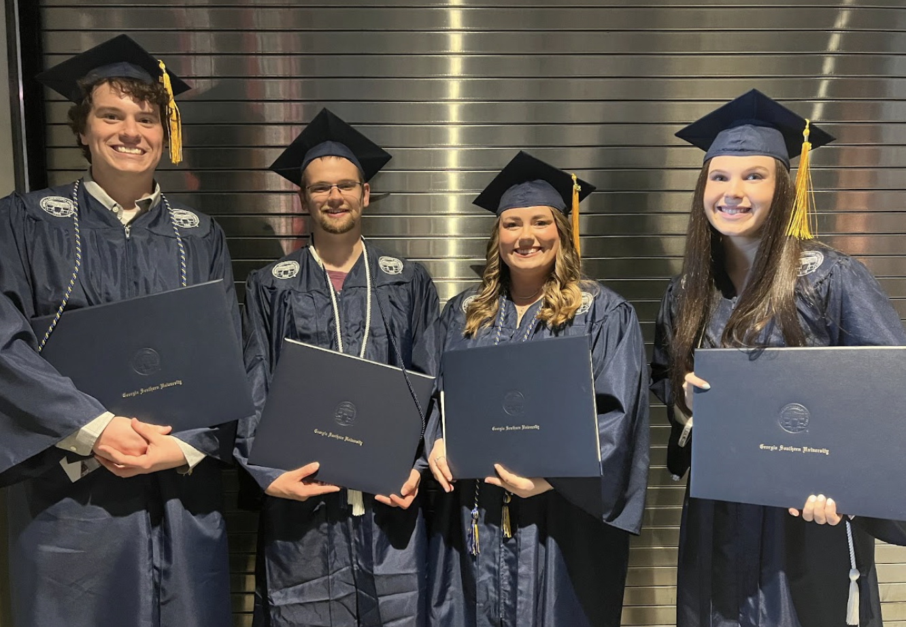
Grace goes to TX for DiscoverBMB
Grace Bennett (Biochemistry, Sr.) attended ASBMBs annual conference DiscoverBMB in San Antonio, Texas with a poster presentation on her work!
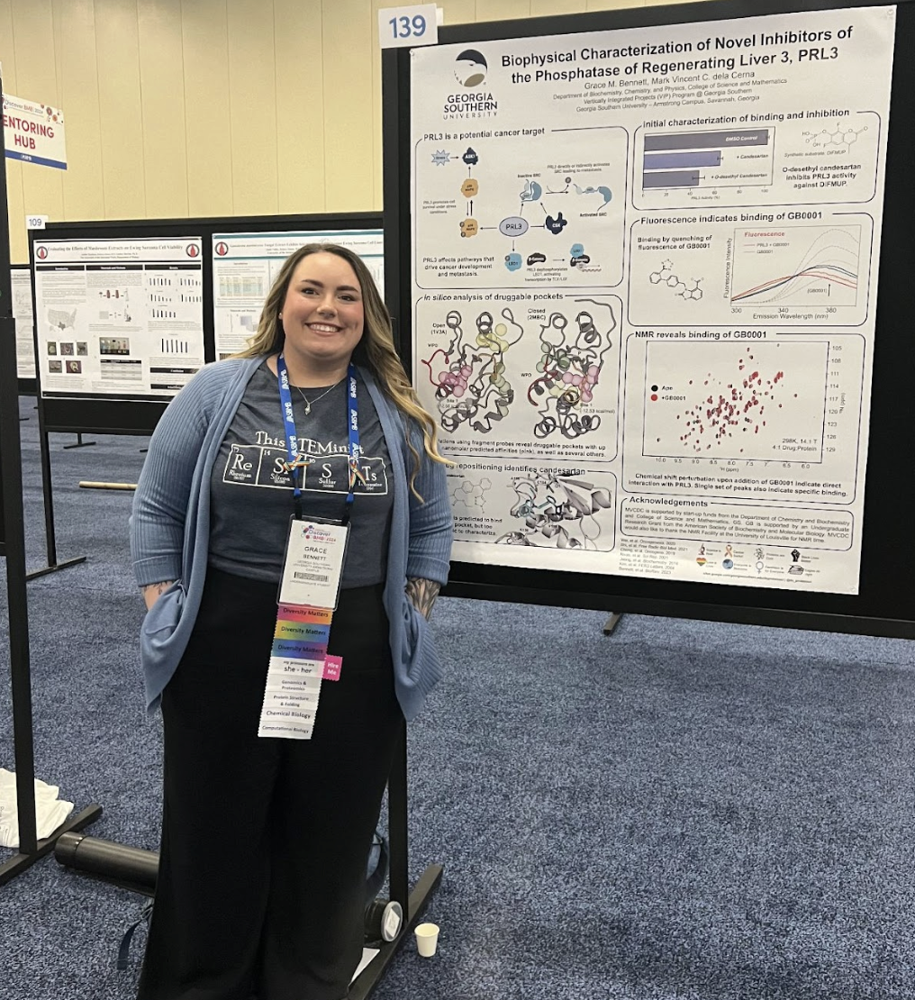
The one with Davis and the sword... and other items?
Davis received a summer fellowship from the department last year and is now paying his dues as he prepares to present to the Coastal Georgia Local Section of the American Chemical Society. He's doing this, the only way he knows how - in style. Or rather, with a sword, a fire extinguisher, and a massive graduated cylinder.
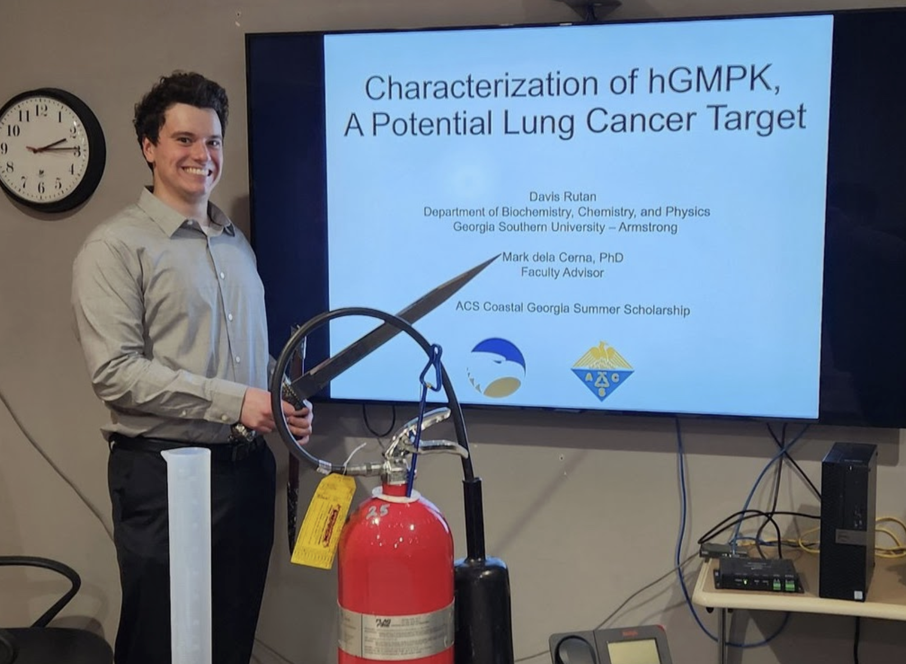
Another first: SERMACS 2023
We took advantage of the proximity of this year's SERMACS in Durham, NC and most of the lab attended and presented.We had a total of 8 posters presenting works of Grace Bennett (Biochem), Ty Spencer (Biochem), Davis Rutan (Biochem), Nick Dillon (Biochem), Jasmine Rodriguez (Biochem), and Alicia Brinegar (Biology). New member Oscar Sistos-Barron (Biochem) was able to attend as well. Oh, and first time we wear our lab shirts as a group.
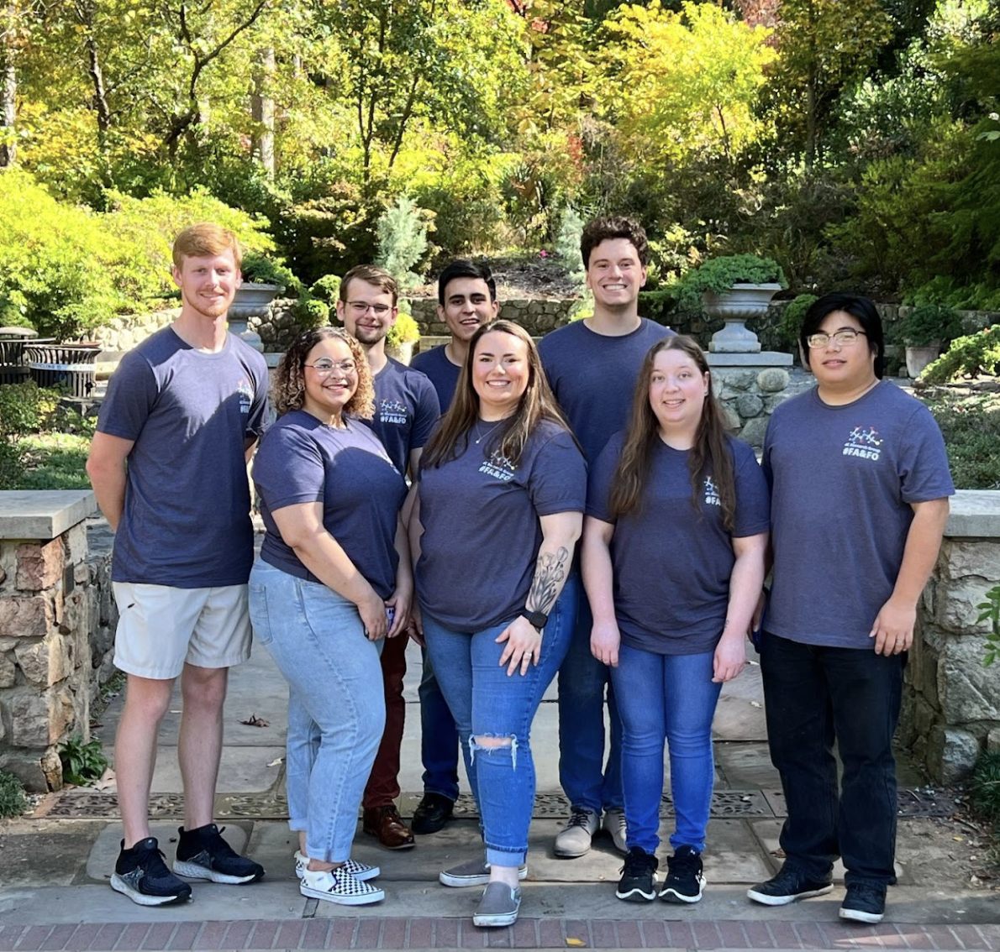
First conference, ASBMB in Seattle!
Several members of the lab attended and presented at the 2023 Annual Meeting of the American Society for Biochemistry and Molecular Biology. We had two posters that showcased the works of Grace (Biochem Jr), Jasmine (Biochem Jr), Julia (Biochem Sr), and Chase (BU Biochem Jr). Grace and Chase did very well in their respective competitions! Good job, everyone!
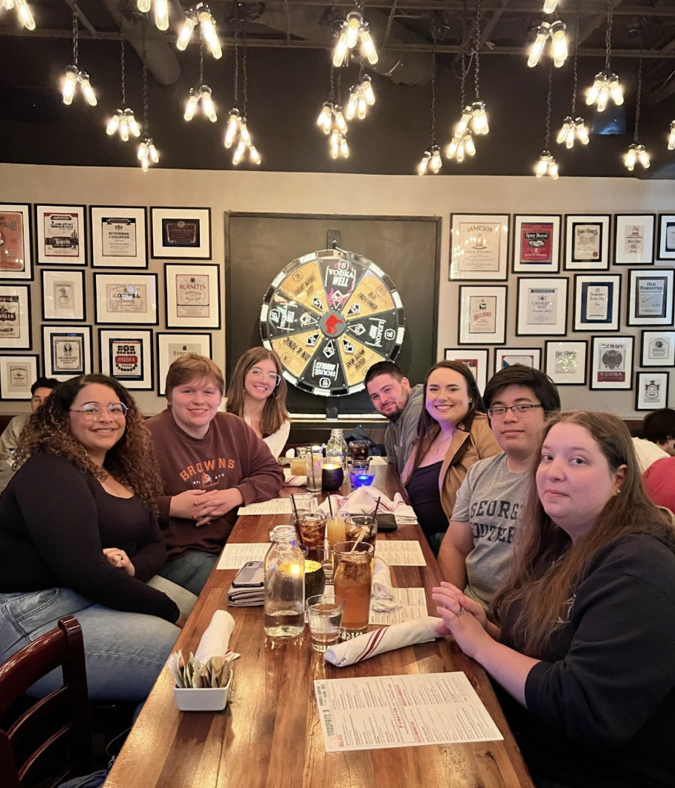
First week of classes and first purification: done
The lab has welcomed its first undergraduate researchers, all of whom have spent some time in the lab during the first week of class. Grace, Biochemistry Junior, has actually completed her first protein prep! (But we have not learned proper PPE yet...)
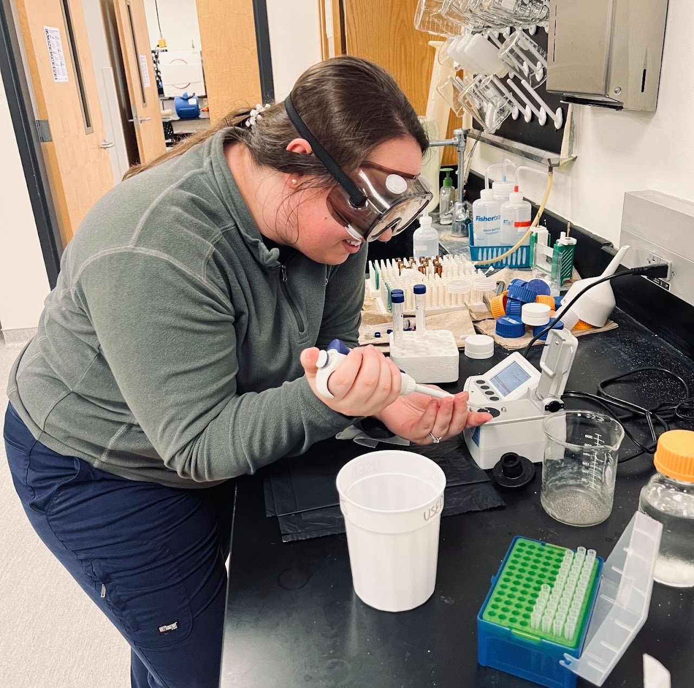
The dela Cerna Lab opens!
Dr. Mark dela Cerna officially joins the faculty of the Department of Biochemistry, Chemistry, and Physics at Georgia Southern University's Armstrong Campus in Savannah. The lab is now recruiting research students!